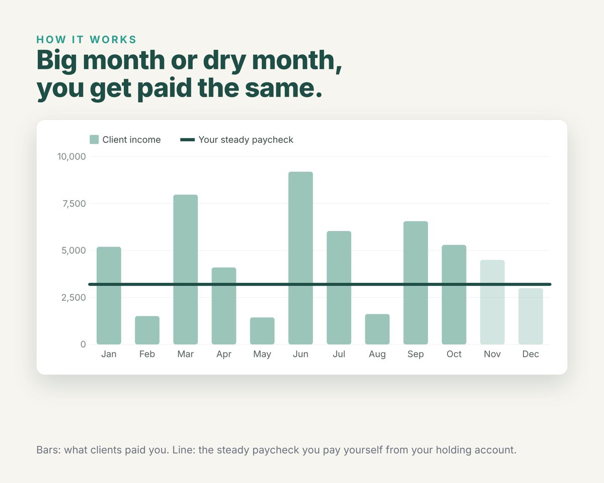
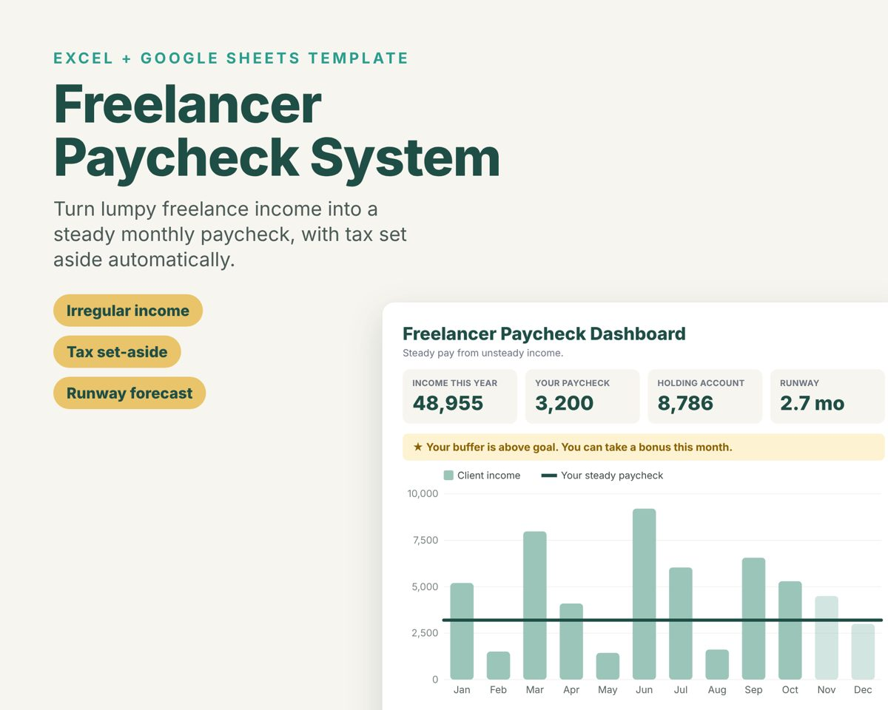

Enter what you earned over the last few months. Get a steady monthly paycheck you can safely pay yourself, how much to set aside for tax, and the buffer you need so slow months don't hurt.
Normal budgets assume the same paycheck every two weeks. Freelancers, contractors and creators get paid in lumps: a big invoice one month, almost nothing the next. If you spend what comes in, you feel rich in good months and panic in slow ones. You also tend to forget that a quarter or more of every payment belongs to the tax office.

Start with your average monthly income after tax and business costs, then trim 10 to 15% for safety. The calculator above does this, and it also replays your actual months to find the smallest starting buffer that never runs dry. If your paycheck comes out lower than your bills, either build the buffer first or cut costs until the numbers meet.
In the US, many self-employed people set aside 25 to 30% of each payment to cover income tax and self-employment tax, and pay it in quarterly estimated payments (April, June, September and January). Your real rate depends on your deductions and where you live, so treat that as a starting point and check with a tax professional.

The Freelancer Paycheck System is a ready-made Excel and Google Sheets template built around this method. Log each payment and it tells you what to move to tax and holding, tracks your buffer and runway, forecasts slow months, flags overspending, and tells you when you can take a bonus. It comes with an example file so you can see it working first.
Get the Freelancer Paycheck System ($19)